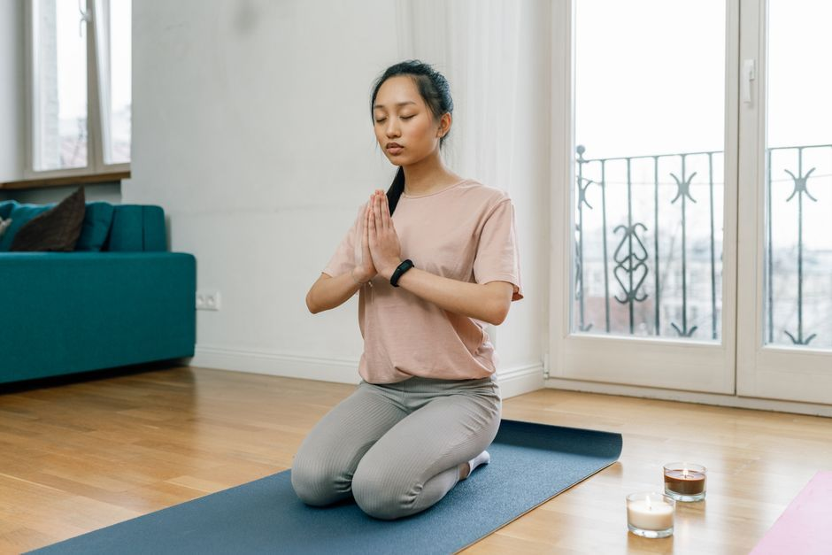
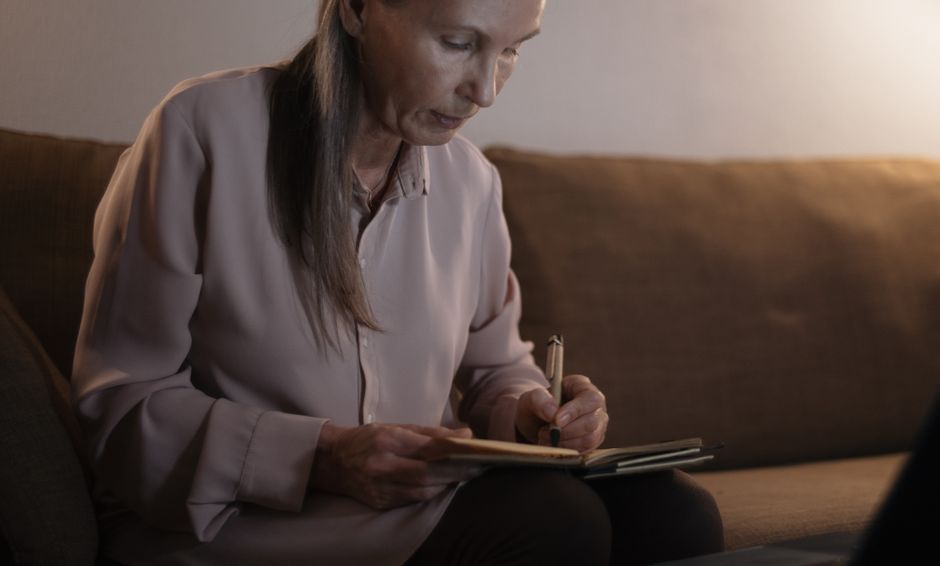

Body and Stress
Does Caffeine Make Anxiety Worse? Coffee, Cortisol, and Your Nervous System
- How does caffeine affect your nervous system?
- Why does coffee make me jittery and anxious?
- Can caffeine cause anxiety if you are wired but tired?
- How much caffeine is too much if you have anxiety?
- How can I cut back on caffeine without feeling awful?
- When should I talk to my doctor?
- Pause for Reflection
- FAQ
For many people, yes, caffeine can make anxiety feel worse. Caffeine stimulates the same alert system that anxiety already has switched on, so it can amplify a racing heart, jitters, and restless thoughts. It does not create the underlying stress, but it can turn up the volume on a nervous system that is already running hot.
How does caffeine affect your nervous system?
Caffeine works partly by blocking adenosine, a chemical that builds up through the day and helps you feel sleepy. With adenosine quieted, the body feels more alert. Caffeine can also nudge the release of stress hormones like adrenaline and cortisol.

For a calm, well-rested body, that can feel like a pleasant lift. For a body already living in what I call the sympathetic lock, the state where the nervous system stays braced for danger, it can feel like pouring fuel on a fire that was already burning.
This is why two people can drink the same cup of coffee and have completely different mornings. One feels focused. The other feels like they are about to jump out of their skin. The coffee is the same. The nervous system it meets is not.
Why does coffee make me jittery and anxious?
Caffeine can produce physical sensations that look a lot like anxiety: a faster heartbeat, shaky hands, a tight chest, a busy mind, and an upset stomach. When your body feels those sensations, your brain may read them as a sign that something is wrong, and the worry grows.
There are a few common amplifiers:
- Coffee on an empty stomach. Without food, blood sugar can dip later in the morning, and a low can feel a lot like panic.
- Running on too little sleep. Many of us use caffeine to cover exhaustion, which keeps the body pushing when it is asking to rest.
- Sensitivity. Some bodies clear caffeine slowly, so one cup lingers much longer than expected.
That empty-stomach pattern is one reason I look at blood sugar and daily rhythm together in my weight and metabolic health support work. The nervous system and metabolism are always talking to each other.
Can caffeine cause anxiety if you are wired but tired?
This is the pattern I see most often. You feel exhausted, so you reach for coffee. The coffee pushes you through the afternoon, but it also keeps the alarm humming, so sleep is lighter and you wake tired again. Then you reach for more coffee.
I call this being wired but tired, and caffeine can quietly keep the cycle spinning. If you have also been feeling depleted in a way that rest does not seem to touch, how to support your adrenals naturally explores the bigger picture of stress load.
Caffeine also lingers. Even an early afternoon cup can make it harder to fall asleep that night. If bedtime has become a battle, why you cannot fall asleep at night may help.
How much caffeine is too much if you have anxiety?
There is no single answer, because every body is different. The FDA's consumer guide to caffeine explains general guidance for healthy adults and notes that sensitivity varies widely. For someone with anxiety, the more useful question is often, "How does my body feel after this?"
Remember that caffeine hides in more than coffee: black and green tea, energy drinks, sodas, some supplements, and chocolate all add to the total.
How can I cut back on caffeine without feeling awful?
Please go gently. Stopping suddenly can bring headaches, fatigue, and irritability for a few days, which is one more stressor your body does not need.
- Eat first. Have breakfast with protein before your coffee, so caffeine is not meeting an empty tank.
- Step down slowly. Replace part of your cup with decaf, or switch one cup a day to herbal tea.
- Set a cutoff time. Keeping caffeine to the morning protects your sleep.
- Replace the ritual, not just the drink. Often what we love is the warm mug and the quiet moment. Keep those. Change what is in the cup.
- Give your body a different lift. Morning light, a short walk, and slow breathing with a long exhale all offer energy without revving the alarm.
When should I talk to my doctor?
Please talk with your physician if you notice a racing or irregular heartbeat, chest pain, dizziness, or anxiety that feels severe or constant. Call 911 for chest pain, fainting, or trouble breathing. Some medications interact with caffeine too, so check with your doctor or pharmacist before making big changes. If you are in crisis or thinking about harming yourself, call or text 988. Natural-first support works best alongside your medical care, never instead of it.
Pause for Reflection
Place one hand on your heart and one on your belly. Breathe in slowly, and let the exhale be longer than the inhale.

Ask gently: What am I asking caffeine to carry for me? Where am I pushing past tiredness instead of listening to it? What would it feel like to let my body rest without needing to earn it?
"Come unto me, all ye that labour and are heavy laden, and I will give you rest" (Matthew 11:28). Your body is not lazy. It is asking for rest it was always designed to receive.
FAQ
Is decaf okay if I have anxiety?
Decaf still has a small amount of caffeine, but much less than regular coffee. Many people find it a gentle way to keep the ritual while lowering the stimulation.
Can quitting caffeine help anxiety?
Some people notice they feel calmer after cutting back, while others notice little change. Caffeine is one piece of a bigger picture that includes sleep, food, and stress load.
Where can I get support?
If this feels familiar, you can reach out through my contact page and we can talk about what gentle, whole-body support could look like for you.
This article is for educational purposes and is not medical advice. It is not intended to diagnose, treat, cure, or prevent any disease. Please work with a qualified practitioner, and consult your physician before making changes to your health routine.
In Renewal,
Lynette Wing
Founder of Renewal Health
Clinical Homeopath, Naturopath, Mind-Body Practitioner
Dedicated to root-cause healing and whole-person alignment. Guiding clients to emerge, align, and live fully, restoring vitality, clarity, and sustainable wellness. About Lynette